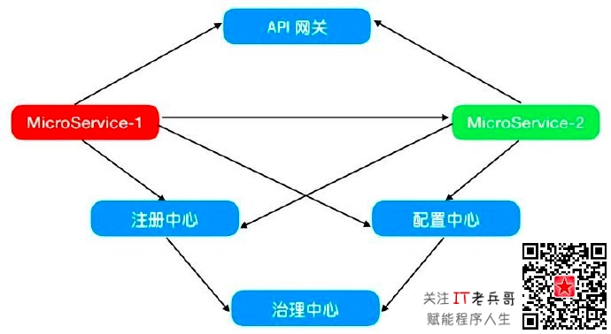
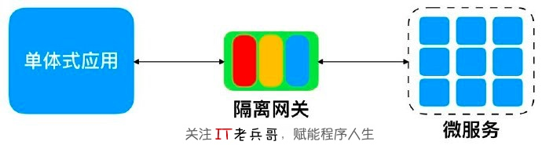
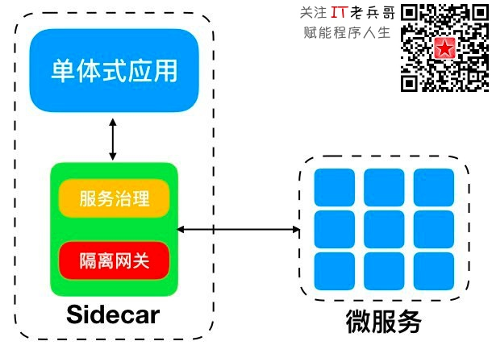

原文连接:https://www.cnblogs.com/itlaobingge/p/12095774.html
热评博文：《如何设计出优美的Web API？》，现阅读量超 2300，小伙伴们不要错过哦！
微服务是当下最流行的应用架构技术了，它跟容器服务、DevOps合称云时代的三剑客，可以帮我们化解业务发展过快导致的产品迭代压力，让我们可以自由选择最适合团队的技术栈，让系统能够承载互联网海量用户的访问，让我们可以更加轻松地运维大型的互联网系统。近些年在厂商、社区和用户等各方努力推动下，微服务相关的理论和产品都日趋成熟，不同语言的微服务开发及治理套件（例如：Spring Cloud/Dubbo等）让我们从零开始搭建微服务变得非常简单快捷，那我们是否就此可以全面进入微服务时代呢？
微服务的演进成熟需要时间，我们熟悉掌握这套新技术也需要时间，除此之外机房里面还跑着大量的单体式应用，它们需要继续维护和升级，任何时候我们都不可能抛开历史轻松上阵。这些单体式应用还担负着公司的核心业务，全部推倒重来、休克式重构是不可取的，投入大周期长，风险完全不可控。我们必须学会边行车边换胎的技能，在不影响现网业务的前提下推动微服务改造，让老系统焕发新的生命力，继续支持业务下一个十年的发展。本文将跟你一起探讨微服务改造相关的经验方法，让你更加从容地拥抱微服务！
- 1. 边行车边换胎三步走演进策略
如何从单体式应用演进至微服务呢？这些单体式应用都存在很长时间了，经过这么长时间的修修补补，体量规模都比较大，尤其是经过几波人交接维护，业务逻辑也变得异常复杂。同时，它们都在线对外提供服务，全部推倒重建的可能性微乎其微，休克式重构投入大周期长，风险也不好控制，还会影响业务对外服务的连续性。从现实情况出发，最可行的架构优化方案就是渐进式的微服务改造，按照业界的最佳实践和个人经验，该演进策略主要包括三个关键步骤：
- 将所有新特性都构建成微服务，遏制单体式应用的生长；
- 在微服务和单体式应用之间构建反腐层，防止老系统腐化新系统；
- 按照特定的优先顺序由外而内逐步瓦解单体式应用。
- 1.1 新建微服务
通常单体式应用所采用的技术相对较老旧，维护这些系统的同事缺少机会学习实践当前主流的技术，久而久之就跟不上主流技术的发展，在晋升、加薪和跳槽时都缺乏竞争力，这会影响到个人的价值。随着系统规模越来越庞大，更新升级和运营维护的难度越来越大，每次发版都要加班加点和心惊胆战，逐渐满足不了业务快速发展的需要。在单体式架构之下，团队无法利用不同技术栈的优势解决不同场景下的问题，即使解决了问题也是事倍功半。
当意识到有必要将单体式应用改造成微服务时，我们通常会认为改造就是将单体式应用一块一块地敲下来改成微服务，这种想法是最直接的，但难度和风险也是最大的。改造初始我们对微服务相关技术也比较生疏，再加上拆解单体式应用本身的难度，双重困难叠加往往会导致改造失败或延期。
最靠谱的策略是先停止往单体式应用里面添加新的特性，所有新特性都构建成微服务，从而遏制单体式应用继续生长。新特性通常不会太复杂，新建微服务也要比从单体式应用上剥离微服务容易一些，借助这个过程让团队逐渐熟悉掌握微服务技术栈，从小规模练兵再到全面铺开。常见的微服务架构如下图所示，主要包含以下几大必备组件：

- 注册中心，提供微服务的注册、发现和状态监测等功能；
- 配置中心，解耦代码与配置，通过统一的远程配置中心管理每个微服务的配置数据，支持动态修改和立即生效等；
- 治理中心，依赖注册中心和配置中心，提供服务降级、服务熔断、流量控制、灰度管理等功能；
- API网关，将每个微服务汇聚一起对外提供服务，网关本身会提供安全鉴权、服务路由、流量控制、计量计费等横切面功能。
- 1.2 构建反腐层
新特性全部构建成了微服务，但老特性还依旧在单体式应用当中，许多业务还需要新旧系统彼此协作才能完成，那么微服务和单体式应用之间还存在彼此交互。但新旧系统对外服务时所采用的协议可能不同，例如：采用Spring Cloud框架开发的微服务主要以RESTful HTTP API对外服务，采用Dubbo框架开发的微服务以Dubbo协议对外服务，而单体式应用可能以Web Service、EJB T3、不规范HTTP API等形式对外服务。除了协议不同之外，新旧系统对领域模型的定义也可能不同，包括名称和属性等，如何调和微服务和单体式应用的不同呢？
在微服务和单体式应用之间构建一道反腐层，这或许是最切实可行的办法。通过反腐层完成新旧系统的对接集成，又可以避免旧系统领域模型对新系统的干扰，让彼此保持松耦合状态，阻止旧系统的腐烂蔓延至新系统。反腐层还可以对单体式应用进行服务化封装，让其像微服务一样以RESTful HTTP API的方式对外服务。反腐层支持双向通讯，重点解决新旧系统对接集成、协议适配和模型转换等问题，按照此功能定位我们可以将反腐层划分成三个模块：
- 外观（Facade），经典设计模式，作为旧系统所有服务接口的门面，简化新旧系统对接的复杂度；
- 适配器（Adapter），经典设计模式，向新系统提供所需的服务实体，负责请求和应答的协议适配；
- 转换器（Translator），负责请求和应答中新旧系统领域模型的转换。
由于单体式应用的架构较为简单，因此在设计之初它们很少考虑系统集成相关的设计，通常一个应用下的不同服务拥有各自的入口，外观（Facade）就是解决此问题的，统一单体式应用对外服务的格式，像微服务一样以RESTful HTTP API的方式对外服务，规范接口的协议类型、URL命名和报文格式等。如果旧系统不属于我们维护，那反腐层就需要包含Facade模块，微服务通过它对接旧系统。如果旧系统也是由我们自己维护，那建议将Facade模块构建在单体式应用内部，微服务通过Adapter模块对接旧系统。
- 1.3 围剿单体式应用
在旧系统周边构建微服务，遏制旧系统的不断生长，然后再从旧系统逐步剥离出微服务，最后完成对单体式应用的绞杀。优良的微服务设计同样遵循高内聚、低耦合原则，将关联紧密的行为封装进一个微服务当中，从而可以减少需求变更所影响的范围。只要服务契约不发生改变，那对单个微服务的升级改造都不会影响到其他服务，因此可以发布更少的服务来快速地满足业务需求，并降低同时部署多个微服务时带来的风险。在从单体式应用剥离微服务之前，我们先看看功能模块之间的边界有哪些类型：
- 技术边界：将系统按照技术栈的不同划分，形成两个部件的边界。它们所采用的技术大相径庭，对开发人员的技能要求不同。业界将此种架构叫做洋葱架构，拥有许多水平分层，不利于改造成微服务。
- 地域边界：按照组织分布的地域划分，相对较容易改造成微服务。
- 业务边界：按照业务类型划分，最适合作为微服务的边界类型。
领域驱动设计（DDD）理论提出了有界上下文（Bounded Context）概念，这是我们厘清服务边界的有效工具，我们可以借助它从单体式应用上剥离微服务。因此，单体式应用的微服务化改造，亦或新建微服务，我们都离不开业务专家的支持，通过他们确定有界上下文的划分，从而设计出好的微服务。
- 2. 隔离网关接管新旧系统间交互
在前面章节中我们已经知道在微服务改造过程中需要构建反腐层，那在实际项目当中反腐层会以什么样的形态存在呢？通常我们会将反腐层设计成隔离网关，以单独的进程运行，在隔离网关内部实现Facade、Adapter和Translator等功能模块。隔离网关不需要从零开始建设，我们可以在Nginx、Kong、Zuul等开源中间件基础上扩展，它们都支持插件化或过滤器等扩展定制模式，我们很容易实现反腐层需要的功能。

通过反腐层（隔离网关）微服务可以与单体式应用进行正常通信，同时彼此之间保持松耦合，单体式应用可以不用做伤筋动骨地改动，微服务可以采用最新的技术独立演进，但这种方案下这些遗留的单体式应用是无法享受到云原生带来的好处。有没有一种方案可以让这些遗留系统也享受到服务发现、流量控制、服务熔断、服务降级等新特性呢？
Service Mesh，下一代微服务架构，可以给我们带来更加完善的解决方案，它将原先通过微服务开发框架（例如：Spring Boot等）侵入到应用内部的服务治理等功能模块封装进了Sidecar，与应用结对部署，作为独立的进程存在，这样可以做到与应用松耦合，架构上更加灵活，可以支持微服务治理相关基础设施的独立升级部署，还可以支持多语言。如果在Sidecar基础上再扩展隔离网关的功能，那遗留的单体式应用也可以更加融入微服务架构了。

- 3. 单体式应用拆解微服务的方法
本章节我们将梳理从单体式应用剥离微服务的一些常见场景和方案。在谈具体案例之前，我们有必要先了解一下业界最佳实践的经验总结，它主要包含以下几个基本步骤：
- 识别出某个业务板块的上下文边界，这是拆解单体式应用的关键步骤。微服务是按照业务来划分和组织的，在动手拆解之前先要理清当前一个单体式应用提供了哪些业务功能，例如：用户管理、商品展示、订单管理、支付管理和物流管理等，按照垂直方向划分出来的功能板块都可以改造成微服务。具体操作时大部分编程语言都提供了命名空间（NameSpace）特性，我们在重构过程中可以借助它将同一个上下文相关的代码归集在一起，然后从整个工程中将其拆解出来形成微服务。
- 厘清业务功能模块之间的依赖，尽量减少依赖关系，从变化频繁、投入产出比高的模块开始剥离，这样可以逐步缓解日常开发的进度压力。经过依赖关系的梳理，冗余的依赖将会被消除，剩下的依赖将会从进程内部的函数调用改造成进程之间的RESTful HTTP API调用。
- 拆解数据，包括数据访问层和数据库表等。除了代码，数据也要被拆解，数据访问层要被打散到不同的命名空间当中，数据库表之间的外键依赖需要被清理消除等。
从业务开始，再到代码，最后才是数据，这就是上述三个步骤的关键。业务是所有代码和数据的源头，面向对象设计（OOD）和领域驱动设计（DDD）是做好微服务设计的专业技能，而用好这两项技能的前提就是对业务有深刻的洞悉，在（下）篇中我们将一起来看看具体的拆解场景，敬请期待！今天先分享到这里，如果你觉得有价值，麻烦动动手指点下文 「 推荐 」按钮，让更多小伙伴可以看到，我也会更加有动力坚持分享。另外，老兵哥我后续还会分享职业规划、应聘面试、技能提升、影响力打造等经验，欢迎 关注 本专栏或歪信公主号 「 IT老兵哥 」！

关注「 IT老兵哥 」，赋能程序人生！
- 软技能类热点文章：
- “花式”裁员套路深，你知道吗？
- 遭遇裁员，如何渡过心理危机？
- 如何在寒冬中找到好工作？
- 2C 还是 2B，跟找工作有什么关系？
- 大公司 vs 小公司，你会选哪个？
- 记住这一点，不怕找不到好工作！
- 跳槽，跳还是不跳，该怎么跳？
- 程序员“求包养”攻略揭秘
- 很努力了，为什么我还在原地踏步？
- 硬技能类热点文章：
- 如何设计出优美的Web API？
- 程序员必须懂的架构入门课
- 从程序员到架构师，有捷径吗？
- 图解 Spring：HTTP 请求的处理流程与机制【1】
- 图解 Spring：HTTP 请求的处理流程与机制【2】
- 图解 Spring：HTTP 请求的处理流程与机制【3】
- 图解 Spring：HTTP 请求的处理流程与机制【4】
- 图解 Spring：HTTP 请求的处理流程与机制【5】
- 如何正确使用 Spring Cloud？【上】
- 如何正确使用 Spring Cloud？【中】
- 如何正确使用 Spring Cloud？【下】
- Spring 核心技术与产品理念剖析【上】
- Spring 核心技术与产品理念剖析【下】